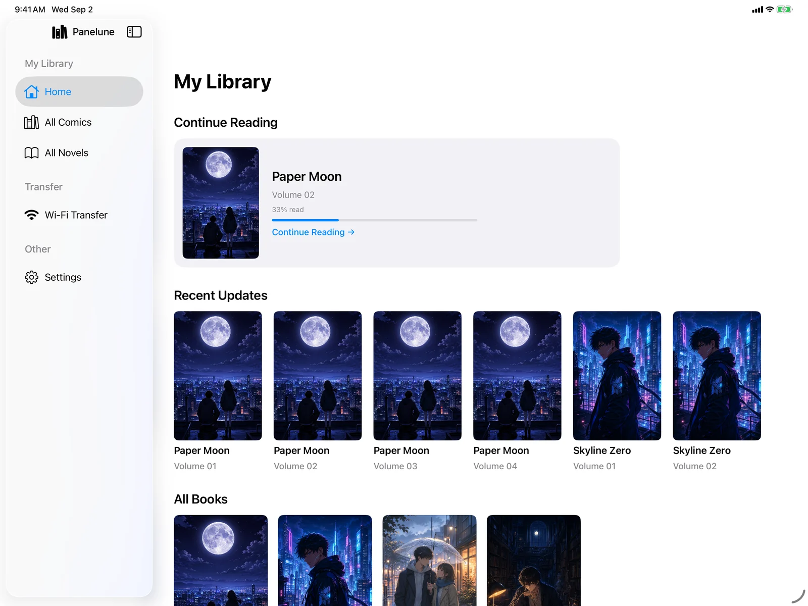
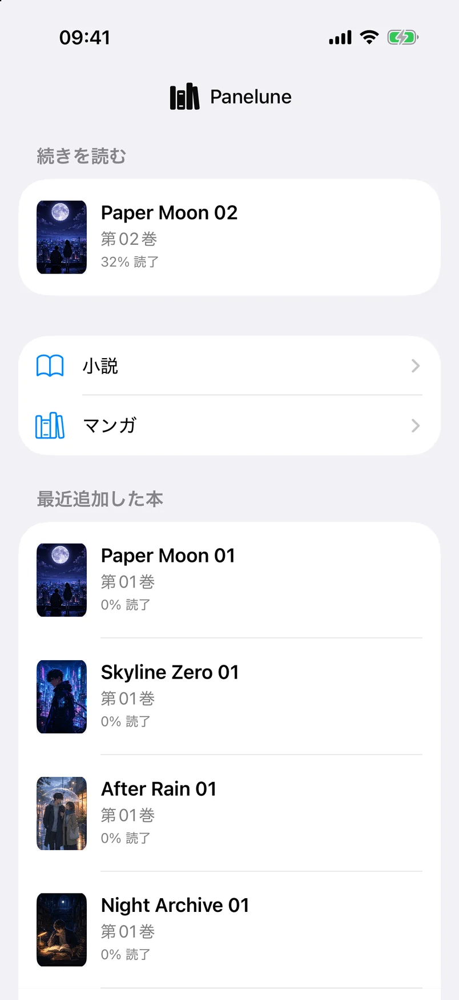
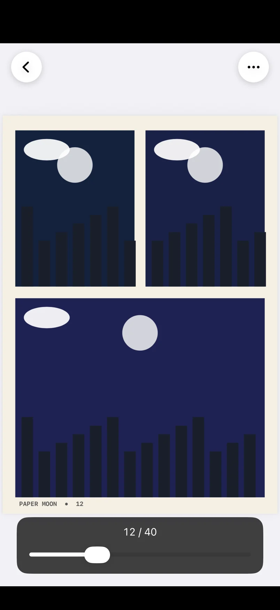
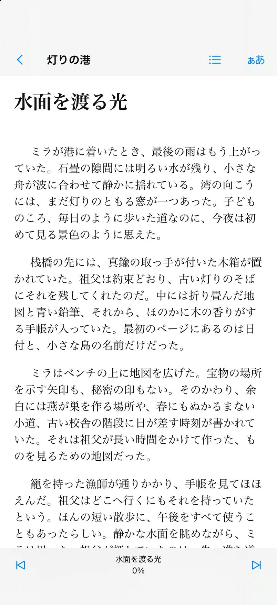
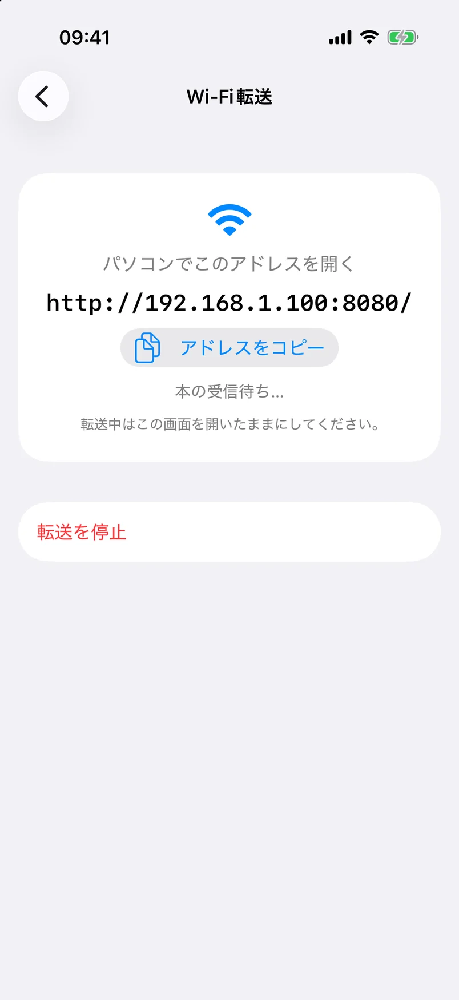

自分だけのライブラリ
漫画と小説をまとめて、シリーズ（Series）と巻（Volumes）ごとに整理。
漫画やEPUB小説を端末内で管理できる、プライバシーを大切にしたリーダー。蔵書を整理し、自分の端末で心地よい読書を楽しめます。
Panelune 1.1.1はiPad向けに配信中です。iPhone対応と読書機能の改善を含む1.2.0はAppleの審査に提出済みで、まだ配信されていません。
オリジナルのデモ作品を使った、実際のPaneluneの画面です。iPadの画面は英語です。





漫画と小説をまとめて、シリーズ（Series）と巻（Volumes）ごとに整理。
フォントの調整、目次、読書位置の復元で、小説をじっくり楽しめます。
指の動きに合わせたページめくりと、縦方向の連続スクロールを選べます。
選んだ本を独立したライブラリに保存し、端末認証でアクセスを保護します。
「ファイル」のフォルダを連携するか、同じ Wi-Fi ネットワークのパソコンから本を転送できます。
取り込んだ本はオフラインで読めます。アカウント登録も、開発者のクラウド書庫も不要です。
1.2.0で改善予定：EPUBの表示・組版・フォント設定、漫画のインタラクティブなページめくり、iPhoneとiPadでの読書位置の復元。
手持ちの本を取り込み、読みやすいライブラリに整理しましょう。
パソコンの本は Wi-Fi 転送でアプリ内に保存できます。iPad の「ファイル」に置いた本は、フォルダを連携して元の場所から読むこともできます。
関連する本をまとめるのが「シリーズ」、その中の 1 冊が「巻」です。取り込み後に名前や分類を整えて、読みたい本を見つけやすくしましょう。
アプリはEnglish、简体中文、繁體中文、日本語、한국어に対応しています。
English · 简体中文 · 繁體中文 · 日本語 · 한국어
無料版では最大3シリーズを作成でき、既存のシリーズには巻を追加できます。Panelune Proでシリーズ数の制限を解除できます。
一度の購入で。サブスクリプションなし。
お住まいの地域の価格はアプリ内でご確認ください。